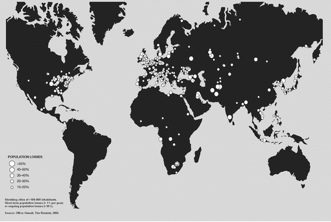
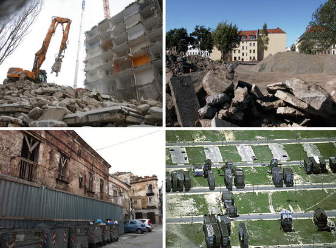
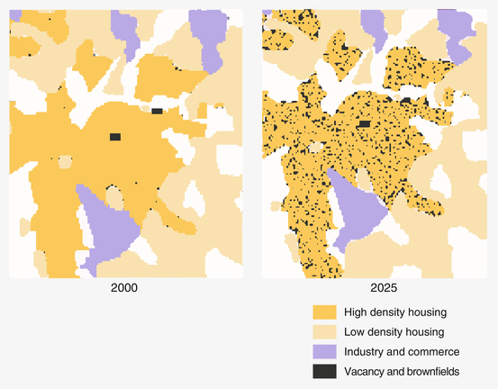
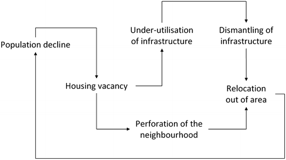
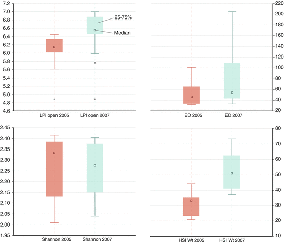
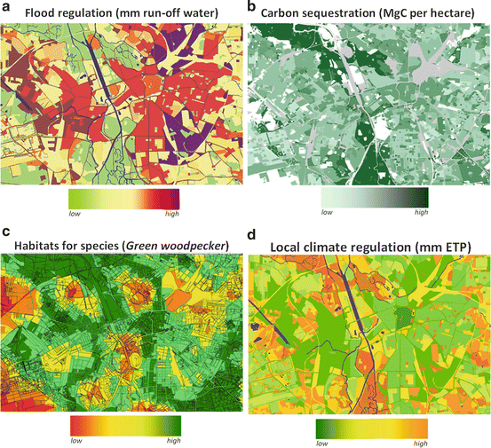
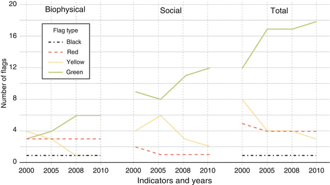

12.1 Introduction
When looking at urban areas and cities, one of the main questions worldwide is how to keep nature intact and environmental resources and biodiversity available for future generations (Seto et al. 2012; Haase 2012, 2013). Over decades, land-use and spatial planning in urban areas has been focused on how to minimize negative effects of settlement, transport and industrial growth, and consequent land consumption, loss and degradation of habitats, and air pollution (Nuissl et al. 2008; Johnson 2001). Set against this context, urban shrinkage and cities with declining population represent a comparatively new challenge. Currently, more than 370 cities worldwide – most of them located in the developed western world – are recorded as shrinking, meaning they are losing population (≥1 % per year or up to 10 % overall). Shrinking cities are predominantly situated in Europe, Russia, Japan and the United States (Rieniets 2009). However, cities in the developing world can also be sites of shrinkage. It should be noted that for countries at war, urban shrinkage is a common outcome. Mogadishu, for example, reputedly lost over a million people because of the Somali conflict (Webersik 2006; Marchal 2006). Harare in Zimbabwe has seen net outmigration due to political and economic instability under President Robert Mugabe (Potts 2009). For regions undergoing rapid urbanization, it is rare for all cities to grow at the same rate and many urban places (especially smaller cities and cities in less affluent parts of a country or region) are likely to experience population decline associated with net outmigration. South Africa, for instance, exhibits this mixed pattern of urban growth and decline even though the country as a whole is experiencing net urban growth and rising rates of urbanization (Boraine et al. 2006). In China, the issue is not shrinking cities, but rather the “hollowing out” of villages because of urbanization. There are hundreds of examples of villages and rural communities in China that show small villages lack development planning and are emptying out as villagers move to new cities for jobs (Long et al. 2012). Because for most developing countries the overarching picture is one of urban growth (Chap. 21), the issue of the shrinkage of selected cities, and especially how this might impact the ecological integrity of the urban system, has received disproportionately little attention. The rapid demographic transition anticipated in China and in middle-income countries suggest, however, that this lacuna will require urgent attention. In this regard, the experiences of managing biodiversity in Europe’s shrinking cities is of considerable wider interest.
In order to address shrinkage, visionary urban policy has to deal with population aging, and accompanying processes of under-use of buildings and infrastructure, de‐densification, and an increase in derelict land and brownfields as a consequence of land abandonment. This presents new questions for the urban policy agenda such as: How can land-use development be directed in order to ensure both urban quality of life and urban healthy ecosystems under conditions of shrinkage? How can high‐quality and sustainable urban livelihoods be maintained in a shrinking city? Are there new opportunities provided by processes and patterns of shrinkage that can make our cities greener and more diverse? Is shrinkage a way to reduce the urban footprint? Until now, urban policy making and planning has mostly been concerned with directing urban growth; there are no prescriptions for how to comprehensively develop or plan a shrinking city. This chapter addresses the complex relationships between socio‐demography, infrastructure, land-use patterns and ecosystems in shrinking cities. It further discusses the consequences of shrinkage in terms of sustainability, ecosystem services, urban footprint and biodiversity. The chapter focuses on empirical and model data elaborated for two shrinking cities in Eastern Germany: Leipzig and Halle. They have been undergoing the process of shrinkage for more than 30 years and therefore serve as rich case examples from which to study patterns of shrinkage and its socio-environmental and ecological consequences.
12.2 What Is Urban Shrinkage?
Referencing Haase et al. (2012), Rink (2009), urban shrinkage is defined as a phenomenon of massive population loss in cities that results from a specific interplay of the economic, financial, demographic or settlement systems, environmental hazards, and changes in political or administrative systems. A prominent example of these shifts were the systemic changes that occurred in Germany and Eastern Europe after 1990 and were coupled with the introduction of a market economy (Rink et al. 2009; Moss 2008). Urban shrinkage has been examined through the lens of uneven economic development (Harvey 2006) and the underlying dynamics of the territorial division of labor (Amin and Thrift 1994). Shrinkage might also result from tremendous environmental disasters, such as Hurricane Katrina, which devastated the city of New Orleans in 2005. Another reason for urban shrinkage is demographic change, namely low fertility and massive out-migration (Müller 2004). The current processes determining urban shrinkage in Eastern Germany – specifically important for the case studies of Leipzig and Halle – emerge in the form of the post-transition decline of traditional heavy industries, a decline that induces general economic crises, unemployment, out-migration to other prospering regions and a subsequent decline in fertility and an increase in population aging (Haase et al. 2012). Furthermore, rampant suburbanization in the peri-urban zones around shrinking cities leads to residents abandoning the city. Both processes often rapidly cause an increase in the age of the remaining population as the elderly stay in the city and their relative percentage increases. This, as kind of a vicious cycle, results in further demographic decline (Nuissl and Rink 2005; Kabisch et al. 2006). Such development was found in many shrinking cities across Europe and the U.S. (Couch et al. 2005). In any case, shrinkage is a socio-economic process but also refers to spatial and land-use patterns (Berg et al. 1982; Lever 1993; Garreau 1991).
12.3 International Relevance and Prospects of Urban Shrinkage
In the last 50 years, about 370 cities with more than 100,000 residents have undergone population losses of more than 10 % (Fig. 12.1). They are distributed across the globe, predominantly in its early-industrialized and developed part, though the lack of data in poorer countries almost certainly masks an undercount of urban shrinkage, just as it precludes the precise tracking of urban growth. In Europe, there are currently more than 70 shrinking cities (Kabisch et al. 2012), and 92 of the worldwide recorded depopulating cities are located in the United States. However, urban shrinkage is already or will be on the political agenda in countries like Japan, Russia or even China.

Fig. 12.1
Shrinking cities faced with population losses worldwide (Reproduced from Oswalt and Rieniets 2006. Published with kind permission of © Hatje Cantz Publishers 2006. All Rights Reserved)
Population decline not only impacts business and employment in the city it also carries repercussions for housing, social and technical infrastructure, municipal finances, social cohesion, segregation and other aspects of urban life (Oswalt and Rieniets 2006; Großmann et al. 2008; Haase et al. 2010; Lauf et al. 2012a, 2012b). Urban shrinkage results in a mismatched supply and demand of space and infrastructure: more space is available for fewer inhabitants. It also reduces the tax base. In this regard, urban shrinkage results in a reconfiguration or reshaping of urban land-use patterns. On the one hand, shrinkage leads to vacancies and derelict land in the affected neighborhoods; on the other, it permits a redistribution of households according to their housing preferences because of low housing costs in favored inner-urban locations and a high number of affordable apartments and houses. Clearly then, shrinkage can greatly affect the quality of urban life (Haase 2008) and support urban resurgence (Kabisch et al. 2009).
Urban shrinkage reshapes social settings for a variety of actors in the city: residents, planners, policy makers, entrepreneurs, and service suppliers (Haase et al. 2007; Jessen 2006). It is difficult to steer or govern urban shrinkage, because under the conditions it produces, governance arrangements risk becoming unstable and fragmented due to a high dependency on external funding for initiatives and activities to address shrinkage, a funding-dependent restriction on initiatives, and unstable coalitions among weak actors (Couch et al. 2011). Several comparative studies of European urban development trends exist for the second half of the twentieth century. One of them has been carried out by van den Berg et al. (1982) in the early 1980s. Based on their results over the period 1950–1975, they developed a four-stage sequential model of urban development that was consistent with the urbanization process in Europe from the early nineteenth century onwards (Fig. 12.2). Using the proxy of population growth of an urban region, four main stages were outlined: urbanization, suburbanization, desurbanization, and, more hypothetically, reurbanization (Kabisch and Haase 2011). Suburbanization processes lead to a decline in the core city and to a desurbanization phase, in which population decline appears everywhere in the core city and the fringe area, and finally leads to negative population growth rates in the entire urban region. This stage is characterized by a dispersal of activities to rural areas and satellite towns, or simply a total decline of activities in the entire urban region. Although Berg et al. (1982) did not refer at all to urban shrinkage, the above described phase of desurbanization helps to theoretically sort the phenomenon of urban shrinkage into the phases of urban development.
To provide some visual examples of what shrinking cities may look like, Fig. 12.3 shows some selected typical land-use patterns of urban shrinkage using examples from Eastern Germany, Poland and the United States. Here, under-use and vacancy of built houses and infrastructure eventually leads to a patchwork-pattern demolition of buildings and the creation of derelict land and brownfields (Lorance Rall and Haase 2011), and an emergence of what Lütke-Daldrup (2001) described as “land-use perforation” (cf. Sect. 12.4.2).

Fig. 12.3
Typical features of urban shrinkage affecting built space: under-use and vacancy of built infrastructure, demolition of buildings, creation of residential and commercial brownfields, and emergence of land-use perforation. Examples are shown from cities in Eastern Germany (upper photos), Poland (lower left) and the United States (lower right) (Photographs published with kind permission of © Google Earth 2013. All Rights Reserved)
12.4 Processes and Patterns of Urban Shrinkage
12.4.1 Demographic Change and Aging
Currently, many cities across Europe are undergoing demographic change (Kabisch and Haase 2011; theoretical background see Cloet 2003; Lutz 2001). Demographic change is becoming increasingly important in discussions about planning policy and governance, as it is considered to be an important factor for future land use development and urbanization throughout the whole of Europe’s cities and urban regions (UN 2007; UNPF 2007). In a range of European countries such as Germany, Italy, Greece, Poland, Portugal, Russia, and Spain, the demographic development is characterized by a predominantly declining and aging population. This demographic trend is due to a fertility that is below replacement and an increasing life expectancy (Edmonston 2006). Another important aspect of demographic change is the decline of the average household size in line with what demographers describe as the “Second Demographic Transition” (Lesthaeghe and Neels 2002; Steinführer and Haase 2007). In addition to a decrease in fertility, migration can be an even stronger determining factor that influences population size and age structure. Shrinking cities particularly suffer from population decline and exhibit a growing proportion of old age and retired people, whereas growing urban centers are still experiencing in-migration by younger age classes and thus an increase in fertility (Kabisch and Haase 2011). Shrinking cities report low fertility rates (predominantly lower than 1.5; Urban Audit), high old age-dependency ratios (ratio of the population aged 65 years or over to the population aged 20–64), a comparatively high share of very old persons (>80 years old), and a declining total annual population over several years or decades (Kabisch et al. 2012).
12.4.2 Land-Use and Infrastructure
The impacts of shrinkage on urban land-use are complex because shrinkage affects both urban fabric and open space in an uneven manner (Haase and Schwarz 2009, 2012). Cities in the U.S., for example, experience the so-called doughnut effect, which is created when city centers become hollows consisting of brownfields and unused plots, and the suburbs grow (Beauregard 2009). In Eastern Germany, urban shrinkage has led to what has been called perforation of the urban fabric wherein specific parts of the city face a more drastic demolition, the appearance of derelict land, and thus an alteration of the built space (Fig. 12.4) (Haase and Schwarz 2009, 2012; Haase et al. 2012; Schwarz et al. 2010). In Eastern Europe, despite the emergence of brownfields as a result of de-industrialization, such dramatic land-use changes still are not yet observed. The impacts of shrinkage on land-use can lag; for instance, it takes time until a vacant building is demolished or a new land-use is finally established. Often, various kinds of interim land-uses can be observed, which represent the subtler processes of land-use change (Lorance Rall and Haase 2011). However, urban shrinkage should not only be associated with losses and negative connotations; it also creates new spaces along with affordable land available for alternative land use options such as public or green spaces (Haase 2008).

Fig. 12.4
Simulation of potential land-use perforation in the inner parts of the city of Leipzig 2000–2025 (Modified from Haase et al. 2012. Published with kind permission of © Environmental Modelling and Software 2012. All Rights Reserved)
As outlined above, population decline in shrinking cities leads to a decrease in residential density and to both oversupply and underuse of urban land, namely housing stock, infrastructure and services (Haase et al. 2007). This creates problems for both public and private suppliers with respect to the underuse of the building stock, primarily dense urban fabric, industrial buildings, and storage depots. Underuse, in turn, leads to housing and commercial vacancies and to a more rapid dilapidation of unused buildings (Bernt 2009). While in some places buildings are demolished to balance the housing or real estate market (Couch et al. 2005), in others they simply become unusable after a period of disuse. While a decreasing building stock density may lead to a relaxation in a densely built city, at a later stage such a decrease might, because of the vacant lots, lead to a perforation of the urban space in the form of a dissolution of the street or block structure (Haase et al. 2007). Moreover, ongoing construction activities in the peri-urban areas of shrinking cities reinforce this decline of the inner city (Nuissl and Rink 2005; Haase et al. 2012). This uneven land-use development of inner-city and peri-urban space can be found in almost all shrinking cities across the world.
Land-use perforation itself poses challenges for superficial and subterranean urban infrastructure provision. This is obvious for network-dependent infrastructure, like water, sewage or electricity: vacant houses and derelict land no longer need supply of water or electricity or a transport for waste water, so the pipes and cables leading to this house are no longer used. In an area with a larger proportion of vacancy and derelict land, under-utilization can pose severe problems for maintenance of the service for the whole area (Moss 2008). Social urban infrastructure like schools, daycare centers, roads and public transport are also influenced by vacancy. All of these infrastructures are optimized for a certain demand structure in an area, usually determined by population density and commercial or industrial activity. In the best-case scenario, efficiency decreases in areas with higher rates of vacancy (Blanco et al. 2009; Schiller and Siedentop 2005). In the worst-case scenario, an area might enter a vicious cycle of declining population, under-utilized and then dismantled infrastructure, so that the area becomes less attractive. Thus, even more residents relocate to another area in the city (Fig. 12.5) (Schwarz and Haase 2010).

Fig. 12.5
Infrastructure-related problems for a shrinking city (Reproduced from Schwarz and Haase 2010. Published with kind permission of © International Environmental Modelling and Software Society International Congress 2010. All Rights Reserved)
12.4.3 Green Space, Habitats and Biodiversity
Despite or even because of their demographic decline, shrinking cities may provide a desired quality of life for all different age classes, including young, middle-age, and elderly dwellers (Haase 2008). Shrinkage may provide opportunity for the creation of new green surroundings and recreational facilities that play a key role in urban quality of life and influence the migration behavior/balance (Schetke et al. 2010). Access and functionality of open/green space is essential to healthy work-life-balance, as well to a healthy aging. The presence of open and green space (which emerges under the conditions that shrinking cities provide) is crucial to a positive evaluation of one’s neighborhood (Sugiyama et al. 2009) and to the accomplishment of healthy activities, such as walking to nearby open spaces (Saelens et al. 2003). Furthermore, the amount of green space close to where people live has a significant impact on their perceived health (Schetke et al. 2012) and can restore ability to focus (Kaplan and Kaplan 1989). Nearby green spaces offer opportunities for private and municipal gardening, food production (Kremer and DeLiberty 2011) and leisure activities (Lorance Rall and Haase 2011; Stigsdotter and Grahn 2004) Additionally, a fair distribution of open and green spaces helps to redress social inequalities by providing different groups of people the opportunity to use and be exposed to these settings (Kuo et al. 1998).
In shrinking cities, a substantial number of vacant lots are found in housing estates, and commercial vacancies occur within inner-city shopping malls or in the form of large-scale brownfield land. Thus, shrinkage has consequences for building and population densities, number and form of green spaces as well as the percentage of impervious surface (Sander 2006; Schetke and Haase 2008). In Leipzig, Mehnert et al. (2005) found a positive correlation between the total amount of urban green infrastructure (parks, allotments, cemeteries, forest, etc.) and the suitability of habitat for breeding birds (e.g., for the green woodpecker, Picus viridus). Strauss and Biedermann (2006) reported an increase in species richness in cities with an increase in inner-city grassy brownfields. Such open or wasteland patches are niches in which rare species thrive (Bolund and Hunhammar 1999; Shochart et al. 2006). For a more extensive discussion on patterns and trends of urban biodiversity, see Chap. 10. Concluding from these empirical studies, one can expect a positive impact of land-use perforation in shrinking cities on biodiversity in terms of how derelict and vacant land become both resource and habitat. Particularly in dense residential districts of a shrinking city, a comparatively high number of residents will benefit from an increasing biodiversity on vacant land.
In order to measure how land abandonment affects biodiversity, several recently demolished sites allocated in high-density, nineteenth-century and socialist-era prefabricated housing estates in Leipzig were analyzed in terms of their spatial shape, configuration and the resulting habitat quality for the Whitethroat (Sylvia communis), a bird indicator species of urban land quality. The pre- and post-demolition situations at 50 sites were compared using the following well-documented landscape metrics indices (Uuemaa et al. 2009; Walz 2011): Largest Patch Index (LPI) of open land uses, Edge Density (ED), Habitat Suitability Index (HSI) and Shannon Diversity Index (SHDI). The HSI was calculated using the approach of the ecological niche, which is formalized by the sum of cells with a certain probability of species presence (cf. Mehnert et al. 2005). For calculation and mapping purpose, the Biomapper software tool was used (cf. Hirzel et al. 2002). The results of the study are shown in Fig. 12.6. ED and patch size (LPI) are the variables that most benefit from selective block demolition compared to only slight changes in Shannon diversity due to the uniform grasslands that emerged after demolition at most of the vacant plots. For species such as the Whitethroat, demolition seems to offer an increase in its preferred open habitat conditions. At a superior spatial level, the perforated urban landscape of shrinking cities possesses a higher share of large green, brown, and derelict land uses than densely built-up cities and thus present opportunities for biodiversity enhancement through the deliberate management of vacant land.

Fig. 12.6
Largest Patch Index (LPI open) of open land uses (such as park, allotment, courtyard, brownfield, waste land etc.), Edge Density (ED), Shannon Diversity, and Habitat Suitability Index (HSI) for a range of recently demolished sites in Leipzig – a comparison of the pre- and post-demolition status (2005 and 2007, respectively) (Modified from Haase and Schetke 2010. Published with kind permission of © Wiley-Blackwell 2010. All Rights Reserved)
From an ecologist’s point of view, urban land-use perforation results in structural diversity of urban land-uses and an increase in the amount of edges. Concepts for the redesign of this urban land-use perforation have been discussed in a preliminary form, such as division of the remaining urban core into either equitable sub-centers or a polycentric structure with fewer dense or even empty patches. Lütke-Daldrup (2001) discusses the perforated built-up body as the most probable urban development pathway for shrinking cities of the West. From a broader perspective, however, effects of land-use perforation on urban ecosystems and biodiversity have not yet been statistically verified through many empirical studies (Haase and Schetke 2010).
12.4.4 Urban Ecosystem Services
There is a relationship between urban shrinkage, vacant land and urban ecosystem services which holds opportunities and new challenges for urban land-use development and related policy-making. Urban shrinkage leads – as reported – to changes in urban land-use and land cover and, consequently, in impervious cover (Haase et al. 2007). Quantity and quality of ecosystem services provisioning, green infrastructure and biodiversity in cities depend on the same variable, the impervious cover (Haase and Nuissl 2010). Over the past years, new empirical knowledge, including remotely sensed and field data about urban ecosystems in shrinking cities, was collected by teams in Eastern Germany (Breuste et al. 2013; Endlicher et al. 2011; Langner and Endlicher 2007) and in the Rust Belt region of the U.S. (Burkholder 2012). These studies have helped to provide a better picture of connections between shrinkage and ecosystem services in cities.
Given the vast amounts of vacant land, what is the role of vacant land in the formation of ecosystem functionality in cities? Significant opportunity lies in the establishment and provision of ecosystem services through strategic design and management of large vacant sites in order to create a web of sustainable land-uses (Burkholder 2012). Vacant built land (with houses), vacant sealed land (without houses), and unused or reused open lands have the potential to enlarge the space/area of ecosystem services provisioning and thus can contribute positively to urban residents’ quality of life. Urban ecosystems provide fresh air, air temperature cooling, and stormwater regulation. The relationship shown in the diagram in Fig. 12.7 implies that it is important to know how much of shrinkage-related new land use is available, where it is available, and how urban ecosystem services can be enhanced there. Both field research and modeling are needed to address these issues. For an extended discussion of urban ecosystem services, see Chap. 11.

Fig. 12.7
Modeling and mapping urban ecosystem services using four core services in the shrinking city of Leipzig, Germany. (a) Impervious (red color) land cover hinders rainfall infiltration and flood regulation which is provided by open or vegetated soils (green). Open spaces in the built space of the inner city show potential to regulate heavy rainfall and, simultaneously, provide lots of local climate regulation (Fig. 12.7d; Haase 2009). (b) Urban forests and trees are able to sequester and to store CO2 in form of C in their roots and thus help to remove it from the atmosphere and to lower the carbon footprint of a city. Land-use perforation in any built-up structure which is followed by tree growth helps to improve carbon sequestration (Strohbach and Haase 2012). (c) Urban structure type with heterogeneous built patterns, nineteenth century-type buildings and bordering to floodplain forests (green) provide optimal habitats for urban species such as the green woodpecker (Mehnert et al. 2005). (d) Urban green spaces such as forests or parks provide local climate regulation and cooling by tree shading and evapotranspiration flows (orange). Impervious surface (green), contrariwise, leads to surface runoff and impedes climate regulation (Haase 2009) (Reproduced from Haase 2012. Published with kind permission of © UGEC Viewpoints 2012. All Rights Reserved)
There are some empirical studies that suggest that land-use patterns of shrinking cities offer opportunities for a re-development of urban nature. European shrinking cities provide great potential for ecosystem services provisioning; for example, modeling results shown in Fig. 12.7 for the city of Leipzig report that there are synergies to be found between the services of recreational usability and new habitat qualities on one hand, and the conditions of perforated land patterns and new edges in the urban space on the other. Moreover, afforestation areas in former built-up areas possess considerable potential for carbon storage (Strohbach and Haase 2012; Strohbach et al. 2011, 2012) and, perhaps even more importantly, for air cooling by tree shade. Leipzig is a highly representative site for a shrinking city in Europe and thus the results obtained here are meaningful also for other European cities. However, it is important to note that urban land-uses providing ecosystem services are predominantly cultivated and managed sites, meaning that urban ecosystem services provisioning in general differs from that offered by natural ecosystems, as there is often a need for additional input by people (for example, energy and maintenance) in urban ecosystems.
12.4.5 Resource and Land Consumption
Resource consumption is a particular concern in cities due to the high concentration of population consuming environmental goods and ecosystem services. The consumption-emission-balance between the city and the rural surroundings is—in general and regardless whether or not a city shrinks—not easy to establish. To give one example: Whereas direct carbon emissions of rural inhabitants are often higher than those of urban ones; the indirect carbon emissions of urban inhabitants are higher compared to rural inhabitants. Some of the factors influencing this phenomenon are differences in diet structure and composition (Kennedy et al. 2009). Comparing urban and a rural areas, urban areas exhibit lower per capita carbon emissions because of the higher population density associated with cities. Nonetheless, in cities, the total carbon emissions increase with income and a more complex life style so that urbanization brings about an increase in carbon release compared to the savings in per capita values (Kennedy et al. 2009). However, shrinkage and declining population numbers do not result in an automatic decrease of natural resource consumption such as land, energy, or water, because the per capita requirements on environmental resources, ecosystem services and housing space are increasing overall (Haase 2012). In both growing and shrinking cities, the number of households increases due to the demographic transition towards smaller one- and two-person households (Liu et al. 2003). Consequently, the demographic transition towards smaller households in shrinking cities, coupled with rising per capita housing space and resource use, might lead to further land consumption, enlargement of transport infrastructure, and ecosystem decline.
In a recent study on population and land use development in Germany, Kroll and Haase (2010) found that neither a decreasing nor an aging population imply reduced land consumption for housing and transportation. The per capita living space increased by a factor of 1.5 from 1990 to 2006, and one/two-person households’ per capita living space increased faster compared to four-person households by a factor of 2.5 in 20 years (Gans and Schmitz-Veltin 2006). Thus, the trend towards smaller household sizes acts as an “invisible” driving force behind ongoing land consumption in shrinking cities. Moreover, in some shrinking cities, sprawling settlement development still continues because of specific housing preferences, such as single-family houses and spacious housing with backdoor gardens. Thus, shrinking cities are in many cases characterised by a vacant or emptying core and a more prosperous fringe (Haase and Nuissl 2010).
12.4.6 Urban Footprint, Sustainability and Resilience
How can we evaluate the impact of shrinkage on urban sustainability? This section suggests using the following two measures and indicators: urban footprint, and the integration of different dimensions of sustainability and resilience. In order to estimate the urban footprint of urban shrinkage, carbon emission and storage at a response unit of 1 ha – a typical size of an area that undergoes change in shrinking cities – is compared for different land covers, among them different land-use types which are typical for shrinking cities as explained in Sect. 12.4.2 (Table 12.1): Although it becomes clear that afforestation at demolished housing or commercial sites cannot compete with carbon storage values of a tropical rainforest, Table 12.1 shows that urban afforestation can help to sequester CO2 from the atmosphere. It further shows that dense housing with backyards and trees can store a comparatively high amount of carbon. If such old, multi-story houses with backyards and trees are maintained and this land use enlarged, this could lower the per capita carbon footprint of a city. For example, each resident of Leipzig emits 1.8 tons of CO2 per year (which equals 480 kg C) and thus 1 ha of afforested brownfield can balance the annual CO2 emissions of about eight residents of the shrinking city of Leipzig. Since there are 7,000 ha of brownfields in Leipzig at the moment, afforestation could balance the annual emissions of 56,000 dwellers, which comprises more than 10 % of the total population.
Table 12.1
Carbon storage in the shrinking city of Leipzig exemplified at typical urban structures/response units and compared to the same area of tropical rainforest
Sequestration (Mg C ha−1) | References | |
|---|---|---|
Floodplain forest | 98.31 | Strohbach and Haase (2012) |
High density housing with backyards and old tree vegetation | 13.70 | Strohbach and Haase (2012) |
Low density single family homes with small lawn-type gardens | 4.20 | Strohbach and Haase (2012) |
Afforested brownfield | 4.02 | Strohbach et al. (2012) |
Lawn-covered brownfield | – | Strohbach et al. (2012) |
Arable land | – | Strohbach and Haase (2012) |
Tropical rainforest | 303 | Lü et al. (2010) |
In order to calculate trade-offs and synergies for sustainability as a consequence of land-use perforation caused by shrinkage, the indicators discussed above in Sect. 12.4 were integrated using the FLAG model computed by SAMISOFT (Nijkamp and Ouwersloot 2003). FLAG evaluates different land-use states (e.g., the land-use state prior to and after demolition and land abandonment, in relation to predefined standards). It uses critical threshold values (CTVs) (Leeuwen et al. 2003) derived from scientific literature and/or individual urban development targets, such as environmental quality standards (Schetke and Haase 2008). Within the FLAG approach, calculated indicator values are set against the background of standard minimum values (CTVmin), target values (CTV) and maximum values (CTVmax). Besides the determination of threshold values for quantitative indicators, the integration of qualitative indicators is realized by indicating 0, 1, and 2 as upper and lower threshold values. Uncertainties due to the indicator estimation or calculation are acknowledged by the FLAG system since it defines a validity space and not a concrete value that has to be matched. Using an intensely shrinking and perforated area in the eastern part of the city of Leipzig, one can bring environmental and social components together. Figure 12.8 shows a differentiated picture of what results from demolition and site clearance: generally, an increase in the number of green bars of the ecological indicators (indicated as “biophysical”) could be detected, which indicates the positive impacts of land-use perforation. The number of open (and temporary/interim) green spaces increases. In contrast, the black bars remain, which means that perforation does not influence those areas that represent the worst environmental situations (Schetke and Haase 2008; Haase and Schetke 2008).

Fig. 12.8
FLAG model result for eastern Leipzig – a comparison of the land-use states of 2000, 2005, 2008, and 2010 under conditions of shrinkage (vacancy, demolition). There are three dimensions of sustainability shown: the ecological, the social and the socio-ecological (= total). The colors of the columns indicate: black = there is a need to stop the development immediately to avoid further damage; red = reverse development needed in terms of a turn into a more socially and environmentally sustainable development; yellow = target value in terms of a negative social and ecological development is reached but not exceeded; green = acceptable development and no change needed. Overall, the FLAG colors show the direction of development which should be followed, but do not indicate if an area will change or not (Modified from Schetke and Haase 2008. Published with kind permission of © Environmental Impact Assessment Review 2008. All Rights Reserved) (Color figure online)
Urban shrinkage allows us to contemplate a resurgence of nature into inner urban areas that are densely populated and have long been part of the built environment. In this vein, ideas regarding “urban wilderness” for recreational and educational purposes are of interest to planners and landscape architects who are faced with urban shrinkage or decline (Rink 2005). The shrinking city of Leipzig has made the novel suggestion of creating urban greenery in the form of (1) temporary gardens or interim use agreements (Lorance Rall and Haase 2011) at core city demolition sites (as a kind of planned alternative to sites that would otherwise remain vacant), and (2) spontaneous vegetation on former brownfields (as a kind of unplanned alternative). De Sousa (2003) perceives green sites developed from inner-urban brownfield sites as “flagships” or experimental fields that serve as models for the future provision of green space with the objectives of improving local biodiversity and human lifestyles. Shrinkage also results from demolition of multi-story housing stock, which forms a transition towards more spacious housing and living conditions in densely urbanized environments. Larger apartments with integrated patios and terraces that contain vegetation, as well as higher shares of urban green within the neighborhood are emerging (Haase 2008). Of course, this does not mean that shrinking cities are more sustainable and resilient than growing ones, but that they bear great potential to develop into resilient cities by following paths of smart urban growth and/or decline.
12.5 The Policy Nexus: Re-thinking and Governing Shrinkage
How do cities respond to shrinkage in terms of governance, policies and institutions? Are there ways to “live with shrinkage” and options to return to a more stable development? Bernt et al. (2012) list a variety of responses to shrinkage. Overall, these types of governance responses vary along two spectra between (a) policy responses that range from passively acknowledging but neglecting shrinkage conditions in favor of growth-orientated strategies, to actively mediating and using the benefits of shrinkage – that is, more space and more green – for urban quality of life development (adaptation); (b) policy responses that range from focusing investment in areas of decline (typically inner urban areas and peripheral social housing estates) versus in areas with the best growth potential (typically suburban and urban fringe areas) (Verwest 2011). In terms of regional specifics, Bernt et al. (2012) distinguish between (1) ‘western’ holistic explicit growth or stabilization strategies dealing implicitly with consequences of shrinkage, and (2) ‘post-socialist’ pro-growth strategies emphasizing job-creation based on attraction of inward investment and European funding, rather than considering causes and consequences of shrinkage. Whereas (1) tries to get at the root and the reasons causing shrinkage and creatively address its effects, (2) attempts to combat shrinkage without making an effort to understand the reasons behind the shrinkage or using its potential.
Both strategies are exogenous – based mainly on external resources. Of course, these external resources are combined with local knowledge. Generally, the development strategies of shrinking city regions in western democratic countries with market economies are a mix between growth strategies supporting economic development – especially in the field of service economy – combined with strategies dealing with the social and physical consequences of shrinkage. These strategies are integrative and holistic because they are not limited only to the support of economic and business development, but also deal with urban regeneration, re-usage of brownfields, investment in the living environment with respect to urban nature and the promotion of social cohesion, and generally appear to be closely aligned with notions of sustainable development. There are, of course, several synergies and trade-offs between land-use policies and governance in shrinking cities and the provisioning of urban ecosystem services and biodiversity. Consider the example of brownfield reuse. One possible strategy, a rebuilding of a brownfield with dense housing, will interfere with services such as climate regulation or the moderation of hazardous rainfall events through absorption of stormwater. A second strategy, terraced houses or urban villas, would automatically give more space to surrounding nature and backyards. A third strategy, an afforested or park-like reused brownfield, might provide access to green space for even more people. Afforestation or trees in a new park would offer additional potential of carbon sequestration. In addition to these described examples, there are many more strategies for possible brownfield reuse. Lorance Rall and Haase (2011) describe one German strategy of governing interim use sites: this program allows individuals or companies to take over the development of private brownfields and waives property taxes in return for a promise of regular maintenance. Thus, the cities can vastly increase public green space in these neighborhoods by following a participatory approach. Finally, yet another approach, urban “guerrilla gardening,” the illegal adoption and maintenance of unused areas by residents for a short time, represents an interim form of brownfield reuse in shrinking cities. For an additional discussion on the implications of urban governance of biodiversity and ecosystem services, refer to Chap. 27.
12.6 Conclusions
There are a growing number of shrinking cities around the globe. Due to demographic change, more cities will experience population decline in the near future; this includes countries experiencing rapid overall population growth, such as China and India. Shrinkage is even evident in Africa, which is otherwise thought of as a continent of rapid urban growth. As the urban population increasingly ages, eventually megacities will also face urban shrinkage. Shrinkage can be identified by a number of typical land-use patterns and features such as residential and commercial vacancies, under-use of infrastructure, demolition and brownfields. On the one hand, these effects of shrinkage are problematic, as they might negatively affect social cohesion and attractiveness of living in various neighborhoods in cities. On the other – with particular focus on urban ecosystems and biodiversity – urban shrinkage offers great potential for nature conservation and green space development, and thus also might contribute to urban quality of life. Brownfields hold space for biological succession, habitat development, and cultivation of trees and plants. There are many different ways that cities across the world can cope with shrinkage. Cities in Europe, for example, follow different strategies to respond to population decline and under-use of space. Ultimately, urban shrinkage does not contradict the idea of the compact city; it simply requires new and alternative ways to define and to shape prevailing urban structures and spaces to keep them alive.
Acknowledgements
I wish to thank our team of the PLUREL EU Integrated Project (contract no. 036921), my colleagues from the Institute of Geography at the Humboldt University Berlin, my colleagues from the Departments of Computational Landscape Ecology and Environmental Sociology at the Helmholtz Centre for Environmental Research – UFZ in Leipzig as well as the editorial team of the Cites and Biodiversity Outlook (CBO) project for the fruitful cooperation.
References
Amin, A., & Thrift, N. (1994). Globalization, institutions and regional development in Europe. Oxford: Oxford University Press. Available online at: https://www.intern.ufz.de/data/ResearchBrief2_17486.pdf
Beauregard, R. A. (2009). Urban population loss in historical perspective: United States, 1820–2000. Environment and Planning A, 41(3), 514–528.CrossRef
Berg, L., Drewett, R., & Klaasen, L. (1982). Urban Europe: A study of growth and decline. Oxford: Pergamon Press.
Bernt, M. (2009). Partnerships for demolition: The governance of urban renewal in East Germany’s shrinking cities. International Journal of Urban and Regional Research, 33(3), 754–769.CrossRef
Bernt, M., Cocks, M., Couch, C., Grossmann, K., Haase, A., & Rink, D. (2012). Policy response, governance and future directions (Shrink Smart Research Brief No. 2). Leipzig: Helmholtz Centre for Environmental Research – UFZ.
Blanco, H., Alberti, M., Forsyth, A., Krizek, K. J., Rodríguez, D. A., Talen, E., & Ellis, C. (2009). Hot, congested, crowded and diverse: Emerging research agendas in planning. Progress in Planning, 71(4), 153–205.CrossRef
Bolund, P., & Hunhammar, S. (1999). Ecosystem services in urban areas. Ecological Economics, 29, 293–301.CrossRef
Boraine, A., Crankshaw, O., Engelbrecht, C., Gotz, G., Mbanga, S., Narsoo, M., & Parnell, S. (2006). The state of South African cities a decade after democracy. Urban Studies, 43(2), 259–284.CrossRef
Breuste, J., Haase, D., & Elmquist, T. (2013). Urban landscapes and ecosystem services. In H. Sandhu, S. Wratten, R. Cullen, & R. Costanza (Eds.), Ecosystem services in agricultural and urban landscapes (pp. 83–104). Hoboken: Wiley.CrossRef
Burkholder, S. (2012). The new ecology of vacancy: Rethinking land use in shrinking cities. Sustainability, 4, 1154–1172.CrossRef
Cloet, R. (2003). Population Changes 1950–2050 in Europe and North America. Population Statstics.doc 3–03, 1–11.
Couch, C., Karecha, J., Nuissl, H., & Rink, D. (2005). Decline and sprawl: An evolving type of urban development – Observed in Liverpool and Leipzig. European Planning Studies, 13(1), 117–136.CrossRef
Couch, C., Cocks, M., Rink, D., Haase, A., Bernt, M., & Großmann, K. (2011). Governance of shrinkage within a European context. Comparative analysis of cross-cutting themes (WP5 D11), EU 7FP project Shrink Smart – Governance of Shrinkage within a European Context (No. 225193). Leipzig: Helmholtz Centre for Environmental Research – UFZ, unpublished typescript, 11 pp.
De Sousa, C. A. (2003). Turning brownfields into green space in the city of Toronto. Landscape and Urban Planning, 62(4), 181–198.CrossRef
Edmonston, B. (2006). Population dynamics in Germany: The role of immigration and population momentum. Population and Policy Review, 25(5–6), 513–545.
Endlicher, W., Hostert, P., Kowarik, I., Kulke, E., Lossau, J., Marzluff, J., Meer, E., Mieg, H., Nützmann, G., Schultz, M., & Wessolek, G. (Eds.). (2011). Perspectives in Urban Ecology. Studies of ecosystems and interactions between humans and nature in the metropolis of Berlin. Berlin/Heidelberg: Springer.
Gans, P., & Schmitz-Veltin, A. (2006). Demographische trends in Deutschland. Folgen für Städte und Regionen (Forschungs- und Sitzungsberichte ARL 6). Hannover: Verl. der ARL.
Garreau, J. (1991). Edge city: Life on the new frontier. New York: Doubleday.
Großmann, K., Haase, A., Rink, D., & Steinführer, A. (2008). Urban shrinkage in East Central Europe? Benefits and limits of a cross-national transfer of research approaches. In M. Nowak & M. Nowosielski (Eds.), Declining cities/Developing cities: Polish and German perspectives (pp. 77–99). Poznań: Instytut Zachodni.
Haase, D. (2008). Urban ecology of shrinking cities: An unrecognised opportunity? Nature and Culture, 3, 1–8.CrossRef
Haase, D. (2009). Effects of urbanisation on the water balance – A long-term trajectory. Environment Impact Assessment Review, 29, 211–219.CrossRef
Haase, D. (2012). The importance of ecosystem services for urban areas: Valuation and modelling approaches. UGEC Viewpoints, 7, 4–7.
Haase, D. (2013). Processes and impacts of urban shrinkage and response by planning. Encyclopedia of sustainability science and technology. Springer New York.
Haase, D., & Nuissl, H. (2010). The urban-to-rural gradient of land use change and impervious cover: A long-term trajectory for the city of Leipzig. Land Use Science, 5(2), 123–142.CrossRef
Haase, D., & Schetke, S. (2010). Potential of biodiversity and recreation in shrinking cities: Contextualisation and operationalisation. In N. Müller, P. Werner, & J. G. Kelcey (Eds.), Urban biodiversity and design (Conservation science and practice series, Vol. 7, pp. 518–538). Chichester: Blackwell Academic Publishing.CrossRef
Haase, D., & Schwarz, N. (2009). Simulation models on human-nature interactions in urban landscapes – A review including system dynamics, cellular automata and agent-based approaches. Living Reviews in Landscape Research, 3, 2.CrossRef
Haase, D., & Schwarz, N. (2012, July 1–5). So less so good – Insights from existing shrinkage models. Paper presented at the 6th International Congress on Environmental Modelling and Software (iEMSs), Leipzig.
Haase, D., Seppelt, R., & Haase, A. (2007). Land use impacts of demographic change – Lessons from eastern German urban regions. In I. Petrosillo, F. Müller, K. B. Jones, G. Zurlini, K. Krauze, S. Victorov, B. L. Li, & W. G. Kepner (Eds.), Use of landscape sciences for the assessment of environmental security (pp. 329–344). Dordrecht: Springer.CrossRef
Haase, D., Lautenbach, S., & Seppelt, R. (2010). Applying social science concepts: Modelling and simulating residential mobility in a shrinking city. Environmental Modelling and Software, 25, 1225–1240.CrossRef
Haase, D., Kabisch, N., Haase, A., Kabisch, S., & Rink, D. (2012). Actors and factors in land use simulation – The challenge of urban shrinkage. Environmental Modelling and Software, 35, 92–103. doi:10.1016/j.envsoft.2012.02.012.
Harvey, D. (2006). Spaces of global capitalism: Towards a theory of uneven geographical Development. London: Verso.
Hirzel, A., Hausser, J., Chessel, D., & Perrin, N. (2002). Ecological-niche factor analysis – How to compute habitat-suitability maps without absence data? Ecology, 83, 2027–2036.CrossRef
Jessen, J. (2006). Urban renewal – A look back to the future. The importance of models in renewing urban planning. German Journal of Urban Studies, 45(1), 1–17.
Johnson, M. P. (2001). Environmental impacts of urban sprawl: A survey of the literature and proposed research agenda. Journal of Environmental Policy and Planning A, 33(4), 717–735.CrossRef
Kabisch, N., & Haase, D. (2011). Diversifying European agglomerations: Evidence of urban population trends for the 21st century. Population, Space and Place, 17, 236–253.CrossRef
Kabisch, S., Haase, A., & Haase, D. (2006, July). Beyond growth – Urban development in shrinking cities as a challenge for modeling approaches. In A. Voinov, A. Jakeman, & A. Rizzoli (Eds.), Proceedings of the iEMSs third biennial meeting: “Summit on environmental modelling and software”. International Environmental Modelling and Software Society, Burlington. CD ROM. Internet: http://www.iemss.org/iemss2006/sessions/all.html. ISBN 1-4243-0852-6 978-1-4243-0852-1.
Kabisch, N., Haase, D., & Haase, A. (2009). Evolving reurbanisation? Spatio-temporal dynamics exemplified at the eastern German city of Leipzig. Urban Studies, 47(5), 967–990.CrossRef
Kabisch, N., Haase, D., & Haase, A. (2012). Urban population development in Europe, 1991–2008: The examples of Poland and the UK. International Journal of Urban and Regional Research, 36(6), 1326–1348. doi:10.1111/j.1468-2427.2012.01114.x.CrossRef
Kaplan, R., & Kaplan, S. (1989). The experience of nature: A psychological perspective. New York: Cambridge University Press.
Kremer, P., & DeLiberty, T. L. (2011). Local food practices and growing potential: Mapping the case of Philadelphia. Applied Geography, 31, 1252–1261.CrossRef
Kroll, F., & Haase, D. (2010). Does demographic change affect land use patterns? A case study from Germany. Land Use Policy, 27, 726–737.CrossRef
Kuo, F. E., Bacaicoa, M., & Sullivan, W. C. (1998). Transforming inner-city landscapes—Trees, sense of safety, and preference. Environment & Behavior, 30, 28–59.CrossRef
Langner, M., & Endlicher, W. (Eds.). (2007). Shrinking cities: Effects on urban ecology and challenges for urban development. Frankfurt Main: Peter Lang.
Lauf, S., Haase, D., Kleinschmidt, B., Hostert, P., & Lakes, T. (2012a). Uncovering land use dynamics driven by human decision-making. A combined model approach using cellular automata and system dynamics. Environmental Modelling and Software, 27–28, 71–82.
Lauf, S., Haase, D., Seppelt, R., & Schwarz, N. (2012b). Simulating demography and housing demand in an urban region under scenarios of growth and shrinkage. Environment and Planning B, 39, 229–246.CrossRef
Leeuwen, E. V., Vreeker, R., & Rodenburg, C. (2003). A framework for quality of life assessment of urban green areas in Europe: An application to District Park Reudnitz Leipzig. Amsterdam.
Lesthaeghe, R., & Neels, K. (2002). From the first to a second demographic transition: An interpretation of the spatial continuity of demographic innovation in France, Belgium and Switzerland. European Journal of Population, 18, 325–360.CrossRef
Lever, W. F. (1993). Reurbanisation – The policy implications. Urban Studies, 30, 267–284.CrossRef
Long, H., Li, Y., Liu, Y., Woods, M., & Zou, J. (2012). Accelerated restructuring in rural China by ‘increasing vs. decreasing balance’ land-use policy for dealing with hollowed villages. Land Use Policy, 29(1), 11–22.CrossRef
Lorance Rall, E. D., & Haase, D. (2011). Creative intervention in a dynamic city: A sustainability assessment of an interim use strategy for Brownfields in Leipzig, Germany. Landscape and Urban Planning, 100, 189–201.CrossRef
Lü, X., Yin, J., Jepsen, M. R., & Tan, J. (2010). Ecosystem carbon storage and partitioning in a tropical seasonal forest in Southwestern China. Forest Ecology and Management, 260, 1798–1803.CrossRef
Lütke-Daldrup, E. (2001). Die perforierte Stadt: Eine Versuchsanordnung. Bauwelt, 24(Stadtbauwelt 150), 40–45.
Marchal, R. (2006). Resilience of a city at war: Territoriality, civil order and economic exchange in Mogadishu. In African urban economies: Viability, vitality or vitiation (pp. 207–229). Basingstoke: Palgrave Macmillan.
Mehnert, D., Haase, D., Lausch, A., Auhagen, A., Dormann, C. F., & Seppelt, R. (2005). Bewertung der Habitateignung von Stadtstrukturen unter besonderer Berücksichtigung von Grün- und Brachflächen am Beispiel der Stadt Leipzig. Naturschutz & Landschaftsplanung, 2(2), 54–64.
Moss, T. (2008). ‘Cold spots’ of urban infrastructure: ‘Shrinking’ processes in eastern Germany and the modern infrastructural ideal. International Journal of Urban and Regional Research, 32(2), 436–451.CrossRef
Müller, B. (2004). Demographic change and its consequences for cities: Introduction and overview. German Journal of Urban Studies, 44, 256–281. http://www.difu.de/publikationen/dfk/en/03_1/welcome.shtml.
Nijkamp, P., & Ouwersloot, H. (2003). A decision support system for regional sustainable development. The FLAG model. Amsterdam.
Nuissl, H., & Rink, D. (2005). The ‘production’ of urban sprawl in eastern Germany as a phenomenon of post-socialist transformation. Cities, 22, 123–134.CrossRef
Nuissl, H., Haase, D., Wittmer, H., & Lanzendorf, M. (2008). Impact assessment of land use transition in urban areas – An integrated approach from an environmental perspective. Land Use Policy, 26, 414–424.CrossRef
Oswalt, P., & Rieniets, T. (Eds.). (2006). Atlas of shrinking cities. Ostfildern: Hatje.
Potts, D. (2009). The slowing of sub-Saharan Africa’s urbanization: Evidence and implications for urban livelihoods. Environment and Urbanization, 21(1), 253–259.CrossRef
Rieniets, T. (2009). Shrinking cities: Causes and effects of urban population losses in the twentieth century. Nature and Culture, 4(3), 231–254.CrossRef
Rink, D. (2005). Surrogate nature or wilderness? Social perceptions and notions of nature in an urban context. In I. Kowarik & S. Körner (Eds.), Wild urban woodlands: New perspectives for urban forestry (pp. 67–80). Berlin: Springer.CrossRef
Rink, D. (2009). Wilderness: The nature of urban shrinkage? The debate on urban restructuring and restoration in Eastern Germany. Nature and Culture, 3(1), 275–292.CrossRef
Rink, D., Haase, A., & Bernt, M. (2009). Specification of working model. WP1 Research Report for the EU 7FP Project Shrink Smart – Governance of Shrinkage Within a European Context (No. 225193). Leipzig: Helmholtz Centre for Environmental Research – UFZ. www.shrinksmart.ufz.de/documents/WP1
Sander, R. (2006). Urban development and planning in the built city: Cities under pressure for change – An introduction. German Journal of Regional Science, 45(1), 1.
Schetke, S., & Haase, D. (2008). Multi-criteria assessment of socio-environmental aspects in shrinking cities. Experiences from Eastern Germany. Environmental Impact Assessment Review, 28, 483–503.CrossRef
Schetke, S., Haase, D., & Breuste, J. (2010). Green space functionality under conditions of uneven urban land use development. Land Use Science, 5(2), 143–158.CrossRef
Schetke, S., Haase, D., & Kötter, T. (2012). Innovative urban land development – A new methodological design for implementing ecological targets into strategic planning of the City of Essen, Germany. Environmental Impact Assessment Review, 32, 195–210.CrossRef
Schiller, G., & Siedentop, S. (2005). Follow-up costs of settlement development for infrastructure under conditions of shrinkage. Disp, 160, 83–93.
Schwarz, N., & Haase, D. (2010). Urban shrinkage: A vicious circle for residents and infrastructure? – Coupling agent-based models on residential location choice and urban infrastructure development. In D. A. Swayne, W. Yang, A. A. Voinov, A. Rizzoli, & T. Filatova (Eds.), International Environmental Modelling and Software Society (iEMSs). 2010 International congress on environmental modelling and software modelling for environment’s sake, fifth biennial meeting. Ottawa. http://www.iemss.org/iemss2010/index.php?n=Main.Proceedings
Schwarz, N., Haase, D., & Seppelt, R. (2010). Omnipresent sprawl? A review of urban simulation models with respect to urban shrinkage. Environment and Planning B, 37, 265–283.
Seto, K. C., Reenberg, A., Boone, C. G., Fragkias, M., Haase, D., Langanke, T., Marcotullio, P., Munroe, D. K., Olah, B., & Simon, D. (2012). Urban land teleconnections and sustainability. Proceedings of the National Academy of Sciences of the United States of America, 109(20), 7687–7692.PubMedCrossRef
Shochart, E., Warren, P. S., Faeth, S. H., McIntyre, N. E., & Hope, D. (2006). From patterns to emerging processes in mechanistic urban ecology. Trends in Ecology and Evolution, 21(4), 186–191.CrossRef
Steinführer, A., & Haase, A. (2007). Demographic change as a future challenge for cities in East Central Europe 2007. Geografiska Annaler, Series B: Human Geography, 89(2), 183–195.CrossRef
Stigsdotter, M., & Grahn, P. (2004). A garden at your doorstep may reduce stress – Private gardens as restorative environments in the city. OPENspace – An international conference on inclusive environments. Edinburgh: OPENspace.
Strauss, B., & Biedermann, R. (2006). Urban Brownfields as temporary habitats: Driving forces for the diversity of phytophagous insects. Ecogeography, 29(3), 928–940.CrossRef
Strohbach, M. W., & Haase, D. (2012). Estimating the carbon stock of a city: A study from Leipzig, Germany. Landscape and Urban Planning, 104, 95–104. doi:10.1016/j.landurbplan.2011.10.001.CrossRef
Strohbach, M. W., Arnold, E., Vollrodt, S., & Haase, D. (2011). Carbon sequestration in shrinking cities – Potential or a drop in the ocean? In S. Rauch & G. M. Morrison (Eds.), Urban environment: Proceedings of the 10th Urban environment symposium (Alliance for global sustainability bookseries 19). Dordrecht: Springer. doi:10.1007/978-94-007-2540-9_6.
Strohbach, M. W., Arnold, E., & Haase, D. (2012). The carbon mitigation potential of urban restructuring – A life cycle analysis of green space development. Landscape and Urban Planning, 104, 220–229.CrossRef
Sugiyama, T., Leslie, E., Giles-Corti, B., & Owen, N. (2009). Physical activity for recreation or exercise on neighbourhood streets: Associations with perceived environmental attributes. Health & Place, 15(4), 1058–1063.CrossRef
United Nations [UN]. (2007). Population Division of the Department of Economic and Social Affairs of the United Nations Secretariat, World Population Prospects: The 2006 Revision and World Urbanization Prospects: The 2005 Revision. New York: United Nations. http://esa.Un.org/unpp
United Nations Population Fund [UNPF]. (2007). State of world population 2007 – Unleashing the potential of urban growth. New York: United Nations.
Urban Audit. (2013). http://www.urbanaudit.org/
Uuemaa, E., Antrop, M., Roosaare, J., Marja, R., & Mander, U. (2009). Landscape metrics and indices: An overview of their use in landscape research. Living Reviews in Landscape Research, 3, 1.CrossRef
Verwest, F. (2011). Demographic decline and local government strategies. Delft: Eburon.
Walz, U. (2011). Landscape structure, landscape metrics and biodiversity. Living Reviews in Landscape Research, 5(2011), 3.
Webersik, C. (2006). Mogadishu: An economy without a state. Third World Quarterly, 27(8), 1463–1480.CrossRef